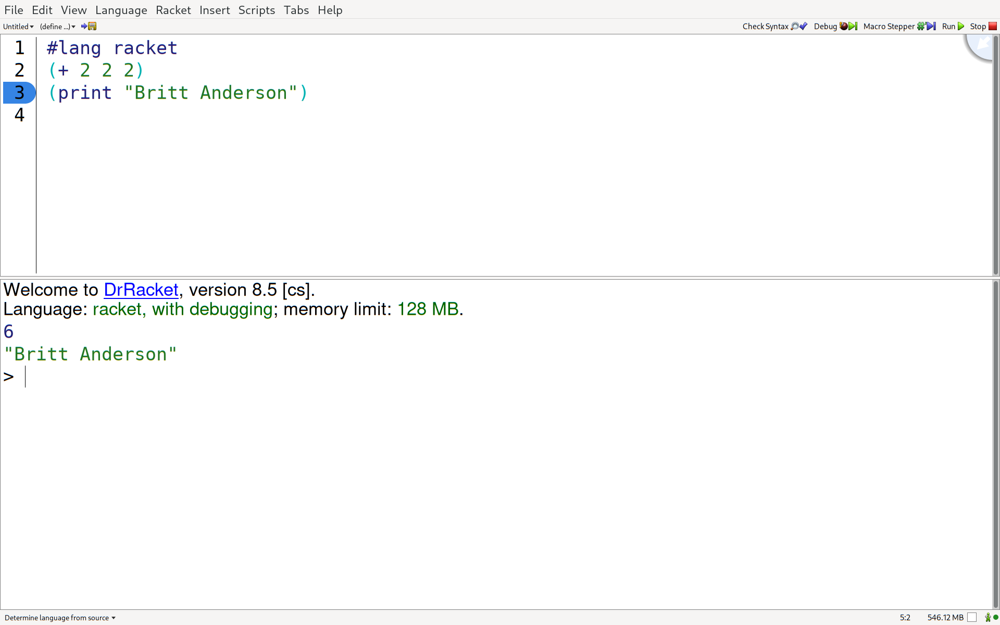

2 Preliminaries
2.1 Racket
For this course we will be writing our code in Racket. Racket is in the category of LISPs, and is a descendant of Scheme. These languages are in the tradition of good old fashioned AI (GOFAI). Their heritage is in symbolic computation, and connects programming with formal models of computation such as the λ calculus. Knowing an example of this language family is good for developing programming knowledge and helping to see the big picture. Programming is more than a particular languge or syntax, it is a medium for expressing ideas. Learning more than one way to express oneself programmatically helps to abstract the message out of the medium. Racket offers the practical advantage that it comes with good support for all popular operating systems and most hardware. Racket incorporates a picture aware integrated development environment with syntax highlighting and has long been a staple of programming education with extensive tutorial material. At the same time Racket is a modern programming language in which one can write "production" code (though admitedly few do). It is touted as a programming language for writing programming languages, thus a student fully familiar with Racket can do more than most when it comes to coding. Though it is not the language of choice if one wants to get a job, it’s selection here emphasizes our perspective on trying to understand the nature of the methods more than how to scale them or optimize run-time efficiencies.
2.1.1 Getting Racket
Go to racket-lang.org and download and install the proper version for you operating system
Verify you can open Dr. Racket
Verify that Dr. Racket works by entering a simple instruction in the top window and seeing it executed in the bottom window

Figure 1: The Dr Racket IDE with a #lang line and some simple code
Submit your screen shot of your Dr Racket IDE with your name to the appropriate Dropbox on Learn.
2.2 Git
This book and the code it uses is either already in a git repository or soon will be. Currently the git repository for this book is hosted on github. Make sure you have the racket-book branch selected. You are free to look at other branches, and you may find some interesting code or examples there from earlier offerings of the course, but the branch that we will be using for the Fall 2022 term is the racket-book branch.
Git is a program for version control, and is very useful. Github is one of a few different hosting hubs where many developers host their code to make it visible to others. You can fork and clone the code of others to try out their software or make your own changes to it.
I tried to explain all this once in a video. If you are already very confused it will not make things worse, and if you are only mildly confused it might help.
2.2.1 Getting Git
To make sure you have, and will be able to update, the code and material for this course you will need to clone this repository. If you wish to be able to make contributions to this course via a pull request you will first need to fork this repo. To that you should,
Get a program for using git on your operating system installed,
Clone (and possibly fork) this repository
Demonstrate that you are tracking the correct branch.
One way to do this is to run the git branch –verbose and git remote –verbose commands from the terminal, take a screenshot (on my linux system I use the terminal screen shot library "scrot").
Submit the screenshot of the output to the Dropbox on Learn.
2.3 Scribble
Scribble is the Racket documentation tool. The course material is being written in it. It is quite powerful right out of the box without too much tweaking, but to get more advanced features functioning well you may have to do some searching and import a number of additional racket packages. It is a version of a markup language (markdown is another common markup language and jupyter notebooks are yet another version of the same idea).
The advantage of these tools is that they allow you to blend both code and text in a single document. You can explain what you are doing as text with links and images like you would in a document. You can also include code like you would in a program. The code can be both written out like a quotation or actually run with the results of the code actually input into a document. This allows the possibility of literate programming or reproducible research reports or what we are doing here: treating the code as another type of data (like our words and references and images and videos) that we use to express our ideas as clearly as we can. I find the babel system of org-mode to be the best of the bunch, but unfortunately it does not support Racket well.
Some of the course assignments will require you to submit a scribble document. You can start out writing a simple scribble document in the Dr Racket IDE and using the examples on the Racket language website. I have also included in this repository a template file that includes a number of imports and has explanations for what they do and how I use them.